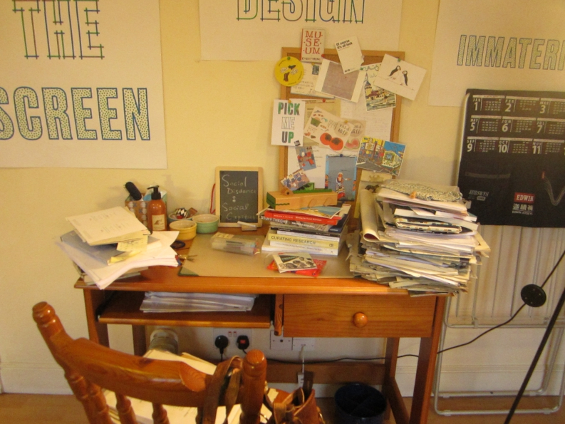
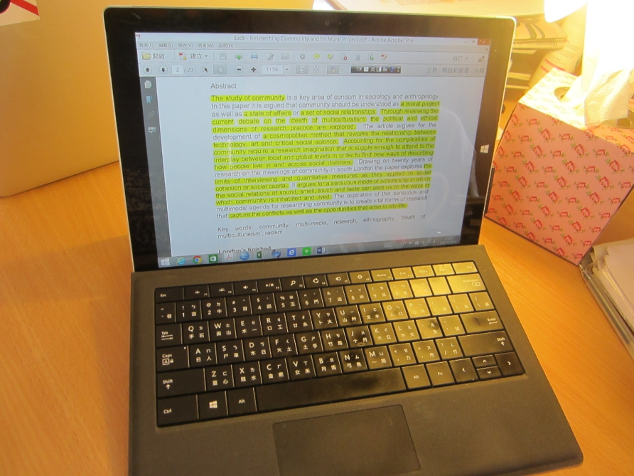

Home Library in London, 2015
Digital and physical collections, materiality, and mediated memories
Home
About
Data Collection
The Materiality of Reading
Data Analysis
Presentation
The Home Space
Menu
Platforms Chosen to Present Ethnographic Materials
21 March, 2016
in
#Presentation
The Sensory Environment
18 March, 2016
in
#The Home Space

Mediated Memories and Aspirations in the Home Objects
18 March, 2016
in
#Data Analysis
Devices and Affordances
15 March, 2016
in
#Data Analysis
#The Materiality of Reading
Shadowing/Participant Observation
13 March, 2016
in
#Data Collection

The Materiality of Reading and Note-taking
06 March, 2016
in
#The Materiality of Reading
Older →